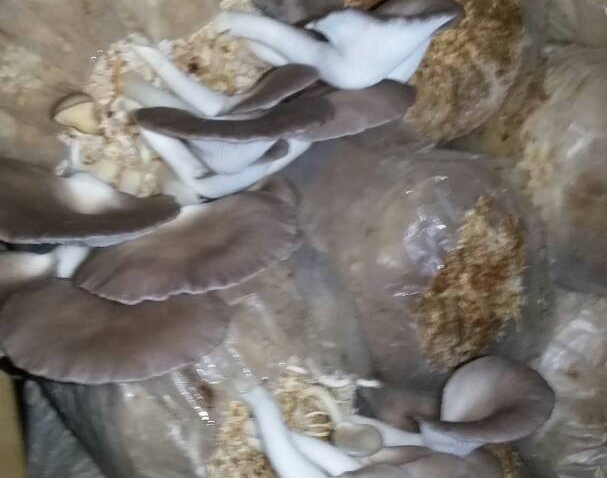
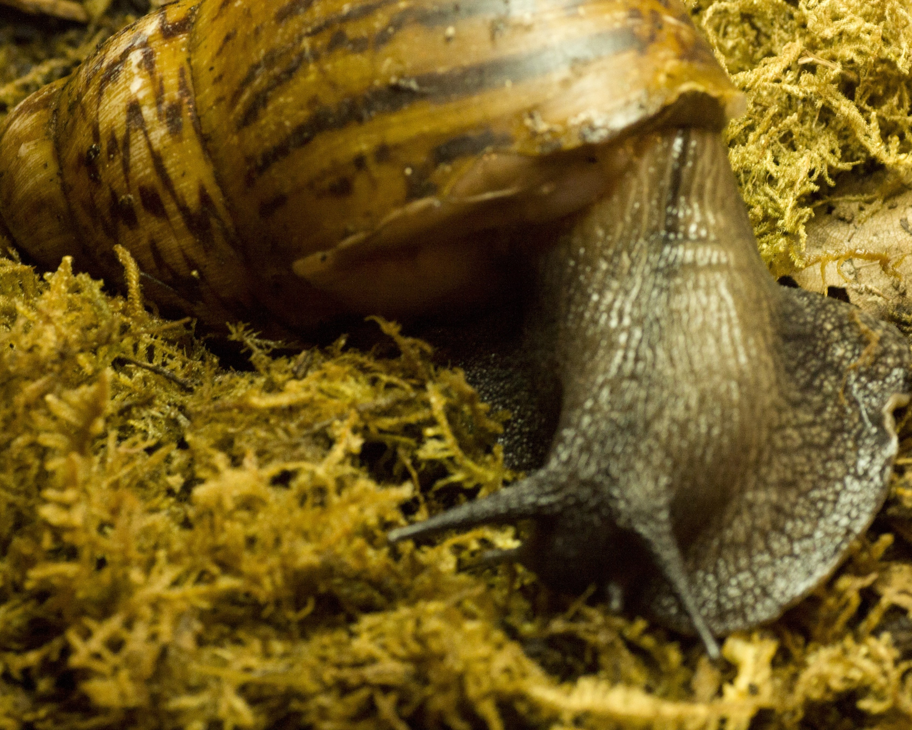
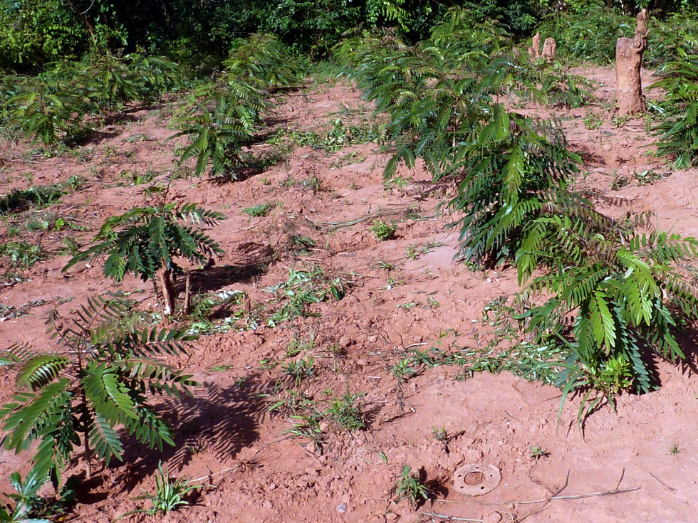

Land Assets
- Multiple parcels totaling over 22 acres (verified 2025)
- Dedicated crop, livestock, and nursery zones
- 3 expansion-ready blocks for new project pilots
Project Portfolio
This page provides a consolidated view of JO Farms operational assets and project areas currently driving our growth agenda.
Visual snapshots from our production and field projects.

Controlled production for nutrition and enterprise development.

High-value breeding systems based on market demand analysis.

Tree planting activities supporting environmental restoration.